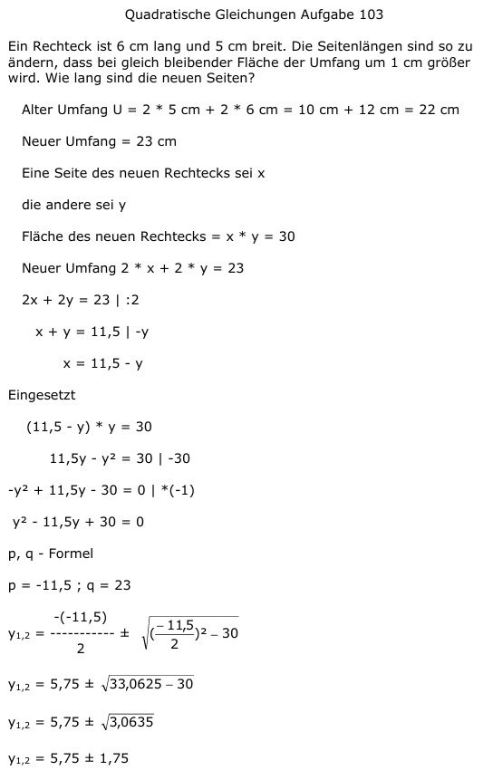

Aufgabe 103 Ein Rechteck ist 6 cm lang und 5 cm breit. Die Seitenlängen sind so zu ändern, dass bei gleich bleibender Fläche der Umfang um 1 cm größer wird. Wie lang sind die neuen Seiten? Alter Umfang U = 2 * 5 cm + 2 * 6 cm = 10 cm + 12 cm = 22 cm Neuer Umfang = 23 cm Eine Seite des neuen Rechtecks sei x die andere sei y Fläche des neuen Rechtecks = x * y = 30 Neuer Umfang 2 * x + 2 * y = 23 2x + 2y = 23 |:2 x + y = 11,5 |-y x = 11,5 - y Eingesetzt (11,5 - y) * y = 30 11,5y - y2 = 30 | -30 -y2 + 11,5y - 30 = 0 | *(-1) y2 - 11,5y + 30 = 0 p, q - Formel p = -11,5 ; q = 23  y1,2 = 5,75 ± 1,75 y1 = 5,75 + 1,75 = 7,5 cm Größere Seite des Rechtecks y2 = 5,75 - 1,75 = 4 cm Kürzere Seite des Rechtecks